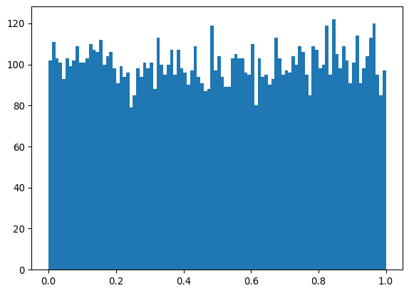
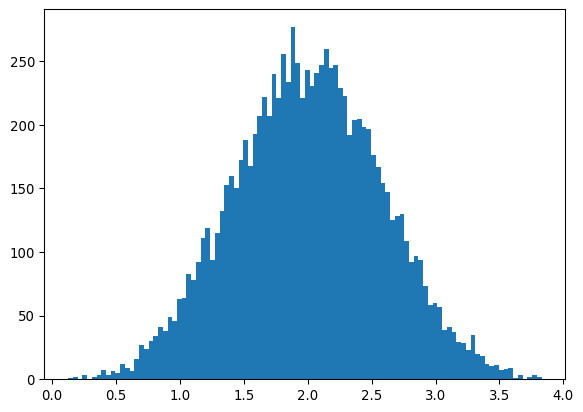
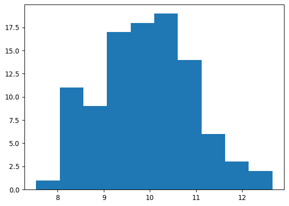
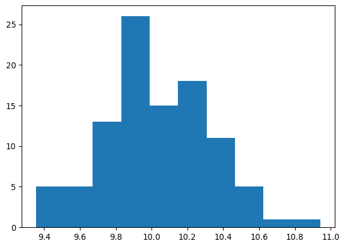

import numpy as np
import math
import matplotlib.pyplot as plt
from scipy.special import combTeorema central del límite
Distribuciones que tienden a la normal
Muchas distribuciones tienden a parecerse a la distribución gaussiana en algún límite. Tomemos la distribución binomial
def binomial(n, r, p):
return comb(r, n)*p**n*(1-p)**(r - n)
def probs(r, p):
return [binomial(n, r, p) for n in range(r+1)]
fig = plt.figure(figsize=(8,20), dpi= 100)
ax1 = fig.add_subplot(8,2,1)
ax2 = fig.add_subplot(8,2,2)
ax3 = fig.add_subplot(8,2,3)
ax4 = fig.add_subplot(8,2,4)
ax5 = fig.add_subplot(8,2,5)
ax6 = fig.add_subplot(8,2,6)
ax7 = fig.add_subplot(8,2,7)
ax8 = fig.add_subplot(8,2,8)
ax1.bar(range(4+1), probs(4,0.5))
ax2.bar(range(5+1), probs(5,0.5))
ax3.bar(range(15+1), probs(15,0.5))
ax4.bar(range(50+1), probs(50,0.5))
ax5.bar(range(5+1), probs(5,0.1))
ax6.bar(range(15+1), probs(15,0.1))
ax7.bar(range(5+1), probs(5,0.9))
ax8.bar(range(15+1), probs(15,0.9))
ax1.set_title('r = 4, p = 0.5')
ax2.set_title('r = 5, p = 0.5')
ax3.set_title('r = 15, p = 0.5')
ax4.set_title('r = 50, p = 0.5')
ax5.set_title('r = 5, p = 0.1')
ax6.set_title('r = 15, p = 0.1')
ax7.set_title('r = 5, p = 0.9')
ax8.set_title('r = 15, p = 0.9')
fig.tight_layout(pad=2.0)
fig.show()/tmp/ipykernel_63345/335318840.py:39: UserWarning: FigureCanvasAgg is non-interactive, and thus cannot be shown
fig.show()
Cuando el número de muestras \(r\) tiende a ser grande, la distribución tiende a una gaussiana con media \(\mu = rp\) y varianza \(np(1-p)\).
def poisson(n, lamda):
return lamda**n*np.exp(-lamda)/math.factorial(n)
def probs(lamda, m):
return [poisson(n, lamda) for n in range(m+1)]
fig = plt.figure(figsize=(8,12), dpi= 100)
ax1 = fig.add_subplot(4,2,1)
ax2 = fig.add_subplot(4,2,2)
ax3 = fig.add_subplot(4,2,3)
ax4 = fig.add_subplot(4,2,4)
ax5 = fig.add_subplot(4,2,5)
ax6 = fig.add_subplot(4,2,6)
ax7 = fig.add_subplot(4,2,7)
ax8 = fig.add_subplot(4,2,8)
ax1.bar(range(5+1), probs(0.2, 5))
ax2.bar(range(5+1), probs(0.5, 5))
ax3.bar(range(10+1), probs(1, 10))
ax4.bar(range(10+1), probs(2, 10))
ax5.bar(range(15+1), probs(5, 15))
ax6.bar(range(25+1), probs(10, 25))
ax7.bar(range(40+1), probs(20, 40))
ax8.bar(range(80+1), probs(50, 80))
ax1.set_title(r'$\lambda = 0.2$')
ax2.set_title(r'$\lambda = 0.5$')
ax3.set_title(r'$\lambda = 1$')
ax4.set_title(r'$\lambda = 2$')
ax5.set_title(r'$\lambda = 5$')
ax6.set_title(r'$\lambda = 10$')
ax7.set_title(r'$\lambda = 20$')
ax8.set_title(r'$\lambda = 50$')
fig.tight_layout(pad=2.0)
fig.show()/tmp/ipykernel_63345/1908137050.py:39: UserWarning: FigureCanvasAgg is non-interactive, and thus cannot be shown
fig.show()
Para \(\lambda\) grande de nuevo encontramos una gaussiana con media \(\lambda\) y varianza \(\lambda\).
Suma de muchas variables aleatorias
Además de aparecer como el límite de muchas distribuciones, la gaussiana también aparece cuando buscamos la distribución de probabilidad de una suma de variables aleatorias independientes.
aleatorios = np.random.random(10000)aleatorios.std()np.float64(0.2907425342340519)aleatorios.mean()np.float64(0.5000139945869974)plt.hist(aleatorios, bins=100)
plt.show()
aleatorios = np.random.random(10000) + np.random.random(10000)plt.hist(aleatorios, bins=100)
plt.show()aleatorios.std()np.float64(0.40712877394195446)aleatorios.mean()np.float64(0.9993399294281758)aleatorios = np.random.random(10000) + np.random.random(10000) + np.random.random(10000) + np.random.random(10000)plt.hist(aleatorios, bins=100)
plt.show()
aleatorios.std()np.float64(0.5800335041162364)aleatorios.mean()np.float64(2.0065877558168133)aleatorios = sum([np.random.random(10000) for i in range(200)])plt.hist(aleatorios, bins=100)
plt.show()aleatorios.std()np.float64(4.136029569476635)aleatorios.mean()np.float64(99.98104225202638)Teorema central del límite
Se dice que los físicos creen en este resultado porque es un teorema matemático y los matemáticos creen en este resultado porque funciona en experimentos. En cualquier caso, este resultado provee la justificación para lo que vimos en el ejemplo de arriba.
Consideremos \(N\) variables aleatorias independientes y provenientes de la misma distribución de probabilidad \(x_1, ..., x_N\). Nos interesa calcular la distribución de probabilidad de la suma \(X = \sum_i^N x_i\). Para hacerlo es más fácil trabajar con la función característica \[ \tilde{p}_X(k) = \left\langle e^{-ikX} \right\rangle = \left\langle e^{-ik\sum_i x_i} \right\rangle = \tilde{p}(k_1 = k, ..., k_N = k)\,. \] De aquí podemos escribir \[ \ln\tilde{p}_X(k) = -i k \sum_i \langle x_i \rangle_c - \frac{1}{2}k^2\sum_{i,j}\langle x_i x_j\rangle_c + ...\,. \] Si las variables son todas independientes entonces los cumulantes que involucran variables diferentes son todos cero \[ \ln\tilde{p}_X(k) = -i k \sum_i \langle x_i \rangle_c - \frac{1}{2}k^2 \sum_i \langle x_i^2\rangle_c + ...\,, \] y si además todas vienen de una misma distribución (tal que sus cumulantes son todos iguales) \[ \ln\tilde{p}_X(k) = -i k N \langle x_1 \rangle_c - \frac{1}{2}k^2 N \langle x_1^2\rangle_c + ...\,. \] Finalmente, definimos la variable \(y \equiv \left(\frac{X - N\langle x_1 \rangle_c}{\sqrt{N}}\right)\). Entonces la distribución de esta variable será dada por \[ \langle y \rangle_c = 0\,,\quad \langle y^2 \rangle_c = \langle x_1^2\rangle_c = \sigma^2\,,\quad \langle y^n\rangle_c \propto N^{1 - n/2}\,. \] Por lo tanto, cuando \(N \rightarrow \infty\) todos los cumulantes de \(y\) desaparecen excepto el segundo tal que \[ \ln\tilde{p}_y(k) \sim -\frac{1}{2}k^2 \sigma^2\,, \] por lo tanto \[ p(y) = \frac{1}{\sqrt{2\pi}\sigma}e^{-y^2/2\sigma^2}\,. \]
Podemos relajar las condiciones de que las variables sean independientes e idénticamente distribuidas. Lo que necesitamos en realidad es que todos los cumulantes caigan lo suficientemente rápido \[ \sum_{i_1,...,i_m = 1}^N \langle x_{i_1} ... x_{i_m}\rangle \ll \mathcal{O}(N^{m/2})\,. \] Si esto se cumple, entonces podemos enunciar la versión más general del teorema:
Teorema central del límite: Considere la suma \(X = \sum_{i = 1}^N x_i\) de \(N\) variables aleatorias independientes \(x_i\), cada una tomada de una distribución con media \(\mu_i\) y varianza \(\sigma_i^2\). La distribución de \(X\) cumple:
Tiene valor esperado \(\langle X \rangle = \sum_i \mu_i\).
Tiene varianza \(\sigma^2(X) = \sum_i \sigma_i^2\).
Tiende a una gaussiana a medida que \(N \rightarrow \infty\).
Mediciones repetidas
Hagamos una primera aplicación del teorema central del límite.
Si queremos medir una cantidad, muchas veces conviene tomar el promedio sobre varias mediciones. Esto reduce el error del resultado
Supongamos que la medición de una cantidad \(x\) arroja un valor aleatorio (valor verdadero + error) con un valor esperado \(\mu\) (que es el verdadero valor de la cantidad \(x\)) y varianza \(\sigma^2\). La varianza el el tamaño típicoo del error cometido al medir la cantidad.
Si realizamos \(N\) mediciones \(x_i\) de la misma cantidad, sabemos que \(X = \sum_i x_i\) tiene un valor esperado
\[ \langle X \rangle = N \mu \]
y una varianza
\[ \sigma^2(X) = N\sigma^2. \]
El promedio de las mediciones es \(\bar{x} = \frac{1}{N} \sum_i x_i = \frac{X}{N}\). El valor esperado de este promedio es
\[ \langle \bar{x} \rangle = \frac{1}{N} \langle X \rangle = \mu \]
Esto quiere decir que esperamos que el promedio nos arroje el valor de la cantidad. La ventaja es que su varianza es menor que la varianza de \(x\).
\[ \sigma^2(\bar{x}) = \langle (\bar{x} - \mu)^2 \rangle = \frac{1}{N^2} \langle (X - N\mu)^2 \rangle = \frac{1}{N^2} N\sigma^2\,. \]
Es decir, el error típico cometido al usar el promedio es
\[ \sigma(\bar{x}) = \frac{1}{\sqrt{N}}\sigma \]
que es menor que el error de cada medición por un factor \(1/\sqrt{N}\).
¡Simulemos estos hechos!
# Generaomos 100 mediciones de una cantidad con un valor real de 10
# y con un error típico de 1
mediciones = np.random.normal(10, 1, 100)plt.hist(mediciones)
plt.show()
# Una mediición aislada tiene un error de orden 1
mediciones[0]np.float64(9.35602284791075)# La desviacion estandar de los datos es cercana a la de la distribución
mediciones.std()np.float64(1.005141536813886)# ahora cada medición es el promedio de 10 mediciones independientes
promedios = sum(np.random.normal(10, 1, 100) for i in range(10))/10# los promedios son mucho más cercanos al valor verdadero
plt.hist(promedios)
plt.show()
# El error típico, dado por la desviación estándar, es lo prometidoo
promedios.std()np.float64(0.3127196405293797)1/np.sqrt(10)np.float64(0.31622776601683794)¡Tareas!
4.6
Un grupo de investigación hace muchas mediciones del número de halos galácticos para cada intervalo de masa. Usando el teorema central del límite y la distribución gaussiana concluyen que hay demasiados halos muy masivos (de los cuales hay muy pocos), tal que es necesario repensar el modelo cosmológico. Comente sobre este resultado.
4.7
La distribución de las fluctuaciones de temperatura \(\delta T (\ell, m)\) de la radiación cósmica de fondo sigue una distribución gaussiana para cada pareja \((\ell, m)\). Aquí \(\ell\) y \(m\) corresponden a una descomposición de los ángulos sobre la esfera celeste. Ambos son números enteros y satisfacen \(\ell \geq 0\) y \(-\ell \leq m \leq \ell\). Normalmente se grafica algo proporcional a \(\delta T^2\) promediado sobre todos los valores de \(m\), para diferentes valores de \(\ell\). Explique por qué se usa una gaussiana para modelar los errores sobre \(\delta T^2\) sólo para \(\ell > 30\). Haga una simulación para apoyar su resultado suponiendo que la distribución de cada pareja es uniforme (en realidad es una distribución \(\chi^2\) pero use la uniforme por simplicidad).
4.8
Un borracho da un paso a la izquierda con probabilidad \(0.5\) y un paso a la derecha con probabilidad \(0.5\). Cada paso mide \(1\) metro. ¿Cuál es la distancia típica a la cual se encontrará el borracho luego de dar \(N\) pasos para \(N\) grande?
4.9
Veinte números aleatorios se extraen de una distribución uniforme entre \(0\) y \(1\).
- Use monte carlo para estimar la probabilidad de que la suma de los veinte números esté entre \(9\) y \(10\). Ídem entre \(15\) y \(16\).
- Use el teorema central del límite para estimar la misma probabilidad.
Recuerde estimar el error de la simulación así como cuantificar con errores relativos la diferencia entre la simulación y la gaussiana.
Comente sobre su resultado.
Pista:
\[ \int_0^a dx\,e^{-x^2} = \frac{\sqrt{\pi}}{2}\text{erf}(a)\,, \]
donde \(\text{erf}\) es la una función especial llamada la función de error. Esta función se puede llamar usando el módulo scipy.special.
4.10
Discuta el teorema central del límite en el caso en el cual las variables no son idénticamente distribuidas. Por ejemplo, si tenemos muchas variables \(x_i\), ¿cómo podría fallar el teorema si los cumulantes dependen de \(i\)?